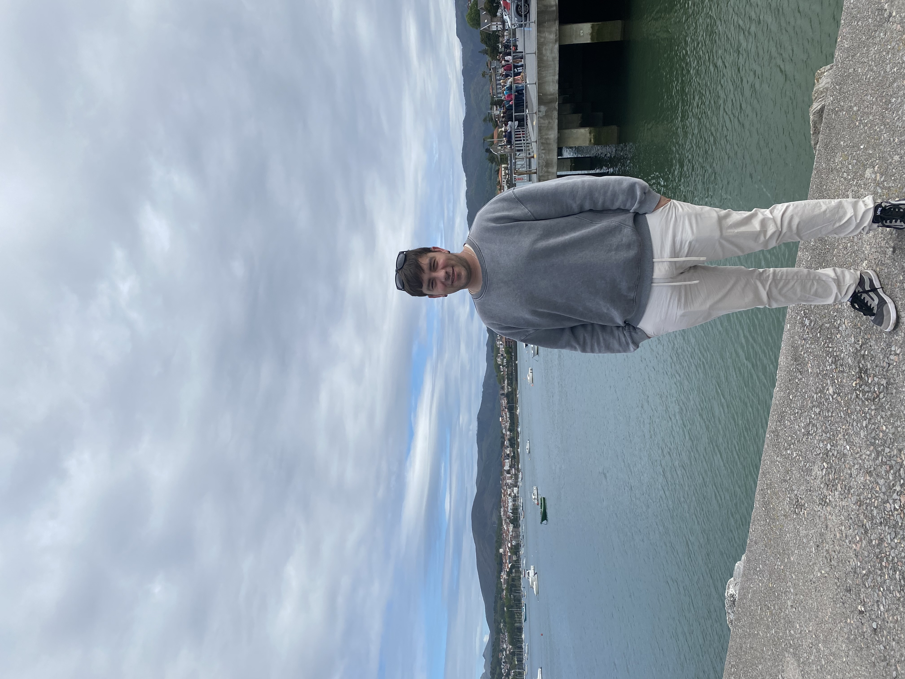
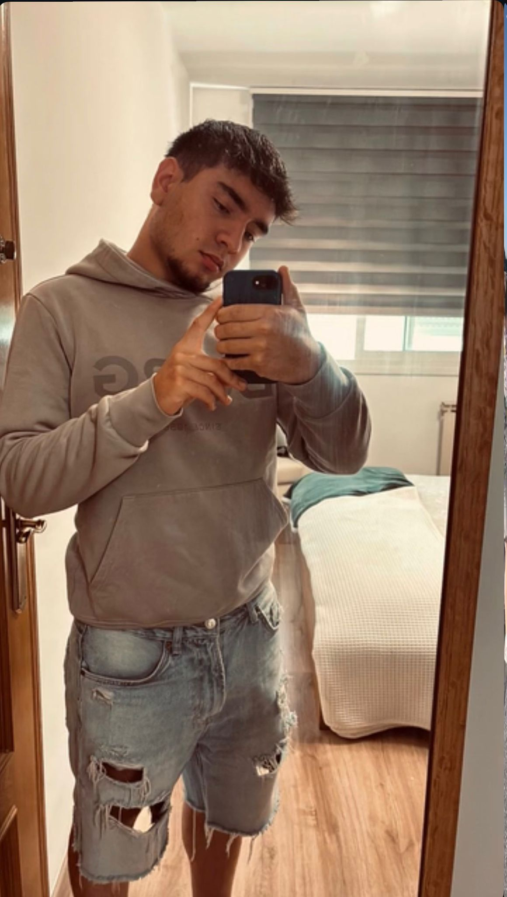

Sobre nosotros
Dani
Soy un joven de 19 años que trabaja por las mañanas y estudia por las tardes un grado superior de Programación de la Producción, con la finalidad de dedicarme a ello y poder llegar a ser un buen mecánico.
Unai
Tengo 28 años, trabajo de mañanas en un taller de soldadura y estudio por las tardes el grado superior de Programación de la Producción, queriendo trabajar en un futuro como Delineante Industrial o profesor de Formación Profesional en el ámbito de la soldadura.
Nuestras fotos


Artículos
Artículo 1: Dacia
En este artículo analizamos la privacidad de Dacia y su política de datos. Aunque cumple con la normativa europea, recoge muchos datos personales y de conducción. Consideramos importante que el usuario limite los datos compartidos, desactive la localización si no la usa y revise los permisos de la aplicación.
Artículo 2: Renault
En este segundo artículo analizamos Renault y su relación con Dacia. Ambas marcas generan dudas sobre la transparencia en el uso de datos, aunque están sujetas a la normativa europea de protección de datos.

Artículo 3: Bicicleta Estática Pelotón
Consideramos preocupante la gestión de datos y los problemas de seguridad relacionados con este producto. Creemos que la empresa debería garantizar mayor anonimato y mejor protección para los usuarios.

Artículo 4: Reproductor Yoto
La política de privacidad deja dudas importantes sobre la responsabilidad de la empresa en la protección de datos. Consideramos necesario que mejoren su compromiso con la seguridad de los usuarios.